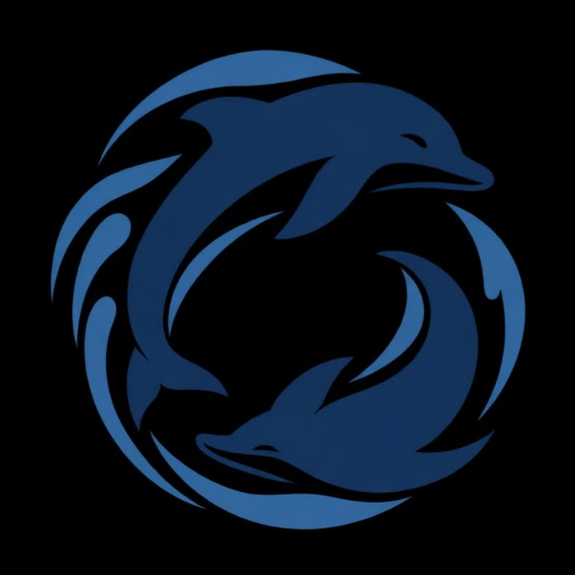

Lumba-lumba melambangkan kecerdasan, kekompakan, dan kerja sama. Lumba-lumba dikenal sebagai hewan yang hidup berkelompok dan saling membantu untuk mencapai tujuan bersama. Hal ini menggambarkan bahwa dalam sebuah perlombaan, setiap anggota tim harus saling mendukung, menghargai perbedaan, dan bekerja sama agar bisa meraih kemenangan. Logo lumba-lumba ini memiliki makna bahwa kemenangan bukan hanya tentang siapa yang paling hebat, tetapi juga tentang bagaimana sebuah tim bisa bersatu, saling percaya, dan berjuang bersama untuk mencapai tujuan. 🐬